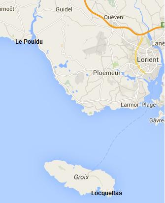

Ar C'hegell Karn Olifant
La Quenouille d'ivoire
The Ivory Distaff
Chants collectés par Théodore Hersart de La Villemarqué
dans le 1er Carnet de Keransquer (pp. 219 et 255-257).
Mélodie 1 "Jeannette Le Yudek"
Mélodie 2
"Marivonik 1"
Mélodie 3
"Marivonik 2"
Arrangement Christian Souchon (c) 2012
|
A propos des mélodies:
Toutes deux sont tirées de "Musiques Bretonnes", recueil de Maurice Duhamel publié en 1913. A propos du texte M. Donatien Laurent note que les quatre vers qui composent le chant "Barbaïk zo un dimezell" introduisent souvent les versions léonaises et trégorroises de "Filip Olier" (ou "Renée Le Glas") dont est tiré le Geneviève de Rustéfan du Barzhaz. C'est ainsi qu'on les retrouve: - dans les Manuscrits de Penguern, tome 90, 84, "Filip Olier", collecté à Taulé, vers 1-4; - et chez Luzel, Gwerzioù I, "Jeannette Le Yudec Les deux "Loïza" du Premier carnet de Keransquer On rencontre cette même introduction, avec un refrain où le nom de "Loketa" (Locqueltas, sur l'île de Groix) rime avec "purletañ (un mot local que La Villemarqué dans le cahier traduit par "aller aux purlettes" et que Luzel rend par "palourdes"), dans la deuxième des deux versions d'un chant noté pp.255 à 257 du premier carnet de Keransquer. Ce chant est intitulé "Loïza" (Louise). Il raconte l'enlèvement par un bateau anglais d'une jeune fille de Groix au Pouldu (à l'ouest de Lorient, à l'embouchure de la Laïta). L'histoire est assez confuse: Après son enlèvement (strophes A-H), Louise est revenue d'Angleterre et se plaint (strophes I-M) d'avoir à élever "un petit singe" et d'être traitée comme la dernière des domestiques (description qui se retrouve dans le chant "Ar Jouiz" tel qu'il est noté page 64 du 1er carnet: "Mont a ran bremañ e tal an tan/ O koñdu ur jouiz bihan./ Hag on ken du vel ur morvran"= "Me voilà face à la cheminée/ à m'occuper d'un petit juif (?)/ qui est noir comme un cormoran"). Au son des canons du Pouldu et de Locqueltas, où elle habite, semble-t-il, Louise dotée par ses oncle et tante d'une bourse remplie de 400 écus, rentre chez ses parents, portant sa petite fille dans un panier (strophes N-R). Dans cette version, Loïza est dite, entre parenthèses, "jolie fille de Groix", mais plus loin l'Anglais l'appelle "Plac'hik Kerne", "jeune fille de Cornouaille" (la Laïta qui sépare le Vannetais et la Cornouaille, met Le Pouldu dans la seconde région). Cette version "Loïza II" n'a qu'une strophe en commun avec la précédente ("Loïza I"), la strophe 6, ainsi qu'une ligne de la strophe 29 du texte français (en italiques). La descente d'Anglais au Pouldu La première de ces deux versions est accompagnée d'une vingtaine de notes et corrections de longueur variable, dont une, le chiffre "1746" inscrit au crayon, complétée par l'indication "voir Ogée au mot ""Groix", montre que La Villemarqué pensait à un épisode décrit dans la "Géographie" d'Ogée, la descente d'Anglais au Pouldu, le 1er octobre 1746, destinée à ruiner Lorient, le port fondé en 1717 par la Compagnie des Indes Orientales. Il ne semble pas qu'il ait dû modifier ses sources pour les rendre conformes à cette hypothèse. Les assaillants, 5000 hommes commandés par le général Sinclair, poussèrent à l'intérieur des terres jusqu'à Guidel avant d'être rejetés à la mer, grâce aux efforts conjugués du Maréchal de Volvire, commandant de la Bretagne, M. de Villeneuve, major du Port-Louis et de deux colonels de dragons et de cavalerie, MM. de l'Hôpital et de Heydicourt. On laissa l'ennemi fugitif qui perdit 900 hommes mais brûla 14 villages, embarquer tranquillement jusqu'à son arrière-garde dans la nuit du 9 au 10 octobre. Cet épisode est relaté dans un autre chant (également collecté par La Villemarqué,) "Ar Saozon a fellent", page 201 du premier carnet". De Heydicourt y est appelé "Petitcourt", et on y cite le nom de Tinténiac, le capitaine des Gardes françaises, qui leva une armée de paysans qui participa aux opérations. La Quenouille d'ivoire On peut supposer que "Loïza", tout au moins la première version de ce chant, a été notée avant 1840 (année où le deuxième carnet a été entamé). Pourtant ce "chant d'Anglais" n'apparaît ni dans le Barzhaz de 1839, ni dans celui de 1845. En juin 1857, la "Revue de Bretagne et de Vendée publiait, p.591, le texte d'une ballade en français, collectée par La Villemarqué et intitulée "La Quenouille d'ivoire" , dont il était dit qu'elle paraîtrait dans la prochaine édition des "Chants populaires de la Bretagne" (l'autre nom du "Barzhaz Breizh"). Les dernières strophes étaient également données en breton: 5 strophes de la version 2, une strophe inédite et le refrain de ladite version. Un examen de ce texte français montre Cependant, la "Quenouille" n'apparaîtra pas dans le Barzhaz de 1867. Cela n'empêchera pas François-Marie Luzel qui devait publier un an plus tard (1868) le premier tome de ses "Gwerzioù", de se lancer, l'année suivante (1869), dans la "Revue archéologique Juillet-décembre 1869 XXème volume (10ème année), page 120, article intitulé "A propos d'une chanson bretonne", dans une critique acerbe du texte français de 1857 présenté comme un manteau d'Arlequin fait d'extraits de chants "authentiques", à savoir ceux qui figuraient dans ses "Gwerzioù"! Le tout agrémenté de références aux grands faussaires de la littérature (qui seront reprises par Francis Gourvil, en 1960, dans son "La Villemarqué", pp. 491 et 492) et de citations latines propres à hisser son propos au niveau de son docte auditoire: "Ab uno disce ommnes" et "Suaviter in modo, fortiter in re". De Loïza à la Quenouille L'examen des pages 255 à 257 montre qu'à priori, si La Villemarqué a bien ajouté quelques couplets (notés en gras) pour assurer la continuité logique de son récit, il n'a fait que modifier l'ordre des groupes de couplets et celui des couplets d'un même groupe, et combiner deux versions assez proches d'un même récit et en empruntant surtout à la seconde version. La "logique" qui sous-tend la strophe charnière additionnelle 28 est déroutante ("Comme je n'avais pas de mari, j'ai été enlevée par les Anglais"), mais elle ne l'est guère plus que dans "Loïza I": 'si je m'étais mariée en temps utile, je n'aurais pas à élever un bâtard")." On peut prétendre, bien entendu, que la version Loïza II est la mise au propre d'un texte entièrement composé par le Barde de Nizon. C'est ce que Luzel n'aurait pas manqué d'affirmer. On remarquera cependant que cette version comprend, comme la première, plusieurs strophes inexploitées qui ont trait principalement au "fuseau de fer et à la quenouille de houx", symboles de la servitude prochaine de la jeune femme. Trouvant sans doute qu'elles allongeaient inutilement le récit, La Villemarqué les a écartées. De même, l'ordre des strophes dans le manuscrit est éloigné de celui qu'elles occupent dans le texte français. Si ces éléments avaient été de sa propre composition, on est en droit de se demander pourquoi il se serait donné tant de peine inutile. Les réminiscences Quant aux réminiscences de gwerzioù et sonioù divers que Luzel se plait à pointer comme des emprunts illicites à d'autres chants, sa liste "de cinq à six poésies réellement populaires dans le pays" est sans doute incomplète. Il cite en effet: Toutes ces références sauf la dernière renvoient à Loïza II, dont l'authenticité est incertaine. Mais il aurait pu ajouter Tous ces éléments se trouvent, ce que Luzel ignorait, dans l'une ou l'autre des deux versions de "Loïza" du manuscrit de Keransquer et l'on pourrait même soutenir que, loin de porter sur elles le discrédit, ils sont la preuve de leur authenticité. En effet, les chanteurs et les compositeurs de chants ne se privaient pas de recourir, souvent involontairement, à de tels emprunts qui étaient de même nature et aussi fréquents que les innombrables clichés et phrases toutes faites dont sont émaillées les vraies gwerzioù traditionnelles ou même modernes. On trouve d'ailleurs de multiples exemples de tels emprunts dans les chants collectés par Luzel lui-même. Les "Chants d'Anglais" Au premier rang des manuvres illicites relevées dans "la Quenouille", Luzel cite l'emprunt de l'intrigue à Marivonik, un autre chant où des navires anglais débarquent sur les côtes bretonnes et enlèvent une jeune fille. Mais pourquoi ne serait-ce pas la gwerz "Marivonik" qui serait l'adaptation trégorroise de "Loïza", laquelle relate un épisode historiquement attesté? Il n'en va pas de même de la première, où il est dit que les Anglais descendirent, un premier novembre, au Dourduff, nom d'une petite anse à l'embouchure de la Rivière de Morlaix, et position d'une utilité stratégique douteuse. Comme dans "Loïza" ils s'en prennent à une jeune fille venue d'un village proche, ici Plougasnou, là Locqueltas-en-Groix. Le colonel Bourgeois a noté une autre version de Marivonik dans laquelle il n'est pas question de Dourduff. "Tiskennas 'r Saozon en Dourduff" y devient: "Tiskennas 'r Saozon a Vor du", soit "les 'Anglais de Mordu' descendirent... - les 'Anglais de 'Mer-Noire''", un lieu qu'on serait bien en peine de situer. Il est vrai que, selon son informateur, la gwerz est originaire de Paimpol ou du pays de Goëlo. La proximité phonétique et sémantique de "Dourdu(ff)" ('eau noire'), "Mordu" ('mer noire') et "Paimpol" (Pennpoul= 'bout de l'anse') d'un côté, avec "Pouldu" ('anse noire') de l'autre est remarquable. Le dénouement de Loïza est certes bizarre: la jeune femme rejoint à la nage un bateau de passage à une lieue de la côte. Mais que dire des versions Bourgeois et Luzel, où Marivonik, quand elle ne se suicide pas ou ne meurt pas sur le seuil de la maison paternelle, est sauvée, respectivement, par un "petit cheval de mer" ('ur marc'hik vor') ou un "petit poisson" ('ur pesk bihan'). Tout porte donc à croire que c'est La Villemarqué qui a découvert la version originale de la gwerz, celle qui a trait à la descente du "Pouldu", désignée comme le "raid de Guidel" dans une pièce du Barzhaz, le Combat de Saint Cast. Notons en outre que "Marivonik" fut collectée par Luzel auprès de Jeanne Le Gall, à Keramborgne en 1849, soit plus de 9 ans après "Loïza" (1ère version en tout cas). En s'en prenant avec des arguments fragiles à une uvre qui n'est pas publiée, se livrant de ce fait à un "procès d'intention" au sens propre, Luzel ne sort pas grandi d'une polémique qui met en lumière avant tout la mesquinerie de son instigateur. Ces menées ont sans doute découragé La Villemarqué de publier ce chant. Pourtant, la Quenouille d'ivoire, même entachée des défauts inhérents à une méthode éditoriale discutable, aurait mérité de figurer dans le Barzhaz où elle aurait illustré, tout comme le Combat de Saint Cast, le genre du "chant d'Anglais", spécifique à la Bretagne et dont La Villemarqué s'avère l'un des premiers et des plus remarquables collecteurs. |
About the tune About the lyrics M. Donatien Laurent remarks that the four lines making up the song "Barbaïk zo un dimezell" often introduce the Leon and Tréguier language versions of "Filip Olier" (or "Renée Le Glas") which are the source of Geneviève de Rustéfan in the Barzhaz. They are found for instance: - in the de Penguern MS, book 90, 84, "Filip Olier", collected in Taulé, lines 1-4; - and in Luzel's Gwerzioù I, "Jeannette Le Yudec The two "Loïza"s in the first Keransquer copybook This introduction, along with a chorus where "Loketa" (Locqueltas, on the island Groix) rhymes with "purletañ (a local word which La Villemarqué, in the copybook, translates as "to go fishing for 'purlettes'" and Luzel as "fishing for clams"), appears in the second of two versions of a song recorded on pp.255 to 257 of the 1st Keransquer copybook. The song is titled "Loïza" (Louise) and recounts the abduction by English soldiers of a girl native of Groix. The kidnapping took place at Le Pouldu (west of Lorient, at the mouth of the Laïta river). The story is a bit confusing: After her kidnapping (stanzas A-H), Loïza came back from England and complains (stanzas I-M) that she must raise "a little monkey" and is treated as the lowest servant of the house (a description which reminds us of the song "Ar Jouiz" on page 64 of the 1st copybook: "Mont a ran bremañ e tal an tan/ O koñdu ur jouiz bihan./ Hag on ken du vel ur morvran"= "Here I stay in front of the hearth/ nursing a Jewish (?) baby/ as black as a cormorant"). While cannon at Pouldu and at her native Locqueltas, are roaring, Loïza who was presented by her uncle and aunt with a purse filled with 400 crowns, goes home, carrying her little daughter in a basket (stanzas N-R). In this version Loïza is dubbed, by the way, "a fair Groix girl", but a bit further the English lord calls her "Plac'hik Kerne", "a Cornouaille girl" (which is consistent with geography: the Laïta sets apart the Vannes country and Cornouaille, leaving definitely Le Pouldu to the west, in the second bishopric). The "Loïza II" version has only one stanza in common with the previous ("Loïza I"), stanza 6, as well as a line from stanza 29 of the French text (in italics). The English raid at Pouldu The first version was noted with a score of more or less long remarks and amendments, one of them being "1746", written in pencil, along with the hint "look up 'Groix' in Ogée" ['s Geography], which is a clear reference by La Villemarqué to an episode in the said work: the English landing at Pouldu, on 1st October 1746, aimed at destroying the stores and ships of the French East India Company at the 1717 founded Lorient harbour. Apparently he had to tamper with his sources to make them comply with this hypothesis. The assailants, 5000 men under Major General Sinclair, landed and fought their way up to Guidel without difficulty, before they were driven back by the combined exertions of Marshall de Volvire, at the head of the royal forces in Brittany, M. de Villeneuve, the commander of Port-Louis harbour and two colonels of dragoons and of the cavalry, respectively, MM. de l'Hôpital and de Heydicourt. The fleeting English who lost "only" 900 men and could burn down 14 villages, were allowed to quietly re-embark the whole of their troops in the night from 9th to 10th October. This episode is addressed in the song (also recorded by La Villemarqué,) "Ar Saozon a fellent" on p. 201 of the 1st Copybook". Heydicourt is named "Petitcourt" in this song which also quotes "Tinténiac", a captain of the French Guards who participated in the fight at the head of a battalion of peasants he had levied. The ivory distaff We may assume that "Loïza", at least the first version of it, was recorded before 1840 (i.e. the year when the 2nd copybook was started). Yet this "Saxon song" was included in neither of the 1839 and 1845 Barzhaz editions. In June 1857, the "Revue de Bretagne et de Vendée" published on page 591, the below French text, collected by La Villemarqué and titled "the Ivory Distaff", with a notice that it would be printed in the next copy of the "Chants populaires de la Bretagne" (another name for the "Barzhaz Breizh"). The last stanzas appeared in both French and Breton: 5 stanzas from the below Version 2, an unknown stanza and the chorus of the said version. When perusing these French lyrics, it appears Yet, the "Distaff" was missing in the 1867 "Barzhaz". This did not prevent François-Marie Luzel who was to publish a year later (1868) the first part of his "Gwerzioù", from embarking, the following year (1869), in the "Revue archéologique" July-December 1869 20th volume (10th year), page 120, article titled "About a Breton song", on acid criticism of the 1857 French text. He felt called upon to expose it as a fraud patchwork of excerpts from songs, which were "genuine", inasmuch as they were included in his own "Gwerzioù"! His diatribe was adorned with references to famous literary forgeries (which Francis Gourvil, in 1960, readily quoted in his "La Villemarqué", on pp. 491 and 492), as well as with Latin sayings devised to lift up his speech, so as to please a scholars' audience: "Ab uno disce ommnes" and "Suaviter in modo, fortiter in re". From "Loïza" to the "Distaff". When cross-checking pages 255 to 257 with the afore-mentioned French text, it appears, a-priori, that, if La Villemarqué did really compose a few verses of his own (here in bold print) to ensure better logical linking within the narrative, he just had stanzas and groups of stanzas re-arranged, and both versions of the same story merged together, mainly drawing on the second one. The "logic" in the additional linking stanza 28 is far from clear ("Since I had no husband, I was kidnapped by the English"), but it is hardly more so in "Loïza I": 'If I had married timely, I were not forced to raise an illegitimate child")." One may assert, of course, that the "Loïza II" version is the final draft of a text entirely composed by the Bard of Nizon. Luzel would not have failed to say so. But it is puzzling why this 2nd version includes, as does the first, several unused stanzas, chiefly those referring to the "iron spindle and the ivory distaff", symbols of the girl's impending servitude. Me may assume that La Villemarqué had found the complete narrative a bit to lengthy and discarded them. On the other hand the arrangement of the stanzas in the Ms is, by far, different from what we read in the French text. If he had taken the pain of composing these elements, why should La Villemarqué decide eventually to upset them, as he did, or not to take them into account? Reminiscences As for the reminiscences of diverse "gwerzioù" and "sonioù" which Luzel readily points out as fraudulously borrowed from other songs, his list limited to "five or six truly traditional folk songs" is by no means exhaustive. He quotes: All these references but the last one point to the controversial "Loïza II" version. But he could have paralleled as well All these elements may be found, but Luzel did not know of it, in either version of "Loïza" in the first Keransquer MS; but there are reasons to believe that, far from casting discredit on these texts, they attest, on the contrary, to their authenticity. As we know, singers and composers of songs did not refrain from borrowing from other pieces, not always on purpose, in the same way and as often as they resorted to the countless clichés and stereotypes with which genuine traditional (and modern) gwerzioù are larded. Countless instances of whole passages migrating from one song to the other are encountered, even in Luzel's collections. The "Saxon songs" Highest ranking in the list of the fraudulent schemes embodied in the "Distaff", is the plot of the song which Luzel scents as an unacknowledged borrowing from Marivonik, another song featuring English ships abducting a girl. But why should the gwerz "Marivonik" not be an adaptation to the Tréguier area of "Loïza" which recounts events attested to by historical records? Unlike the former which tells us that the English sailed, on a 1st of November, down the Dourdu(ff), a little tributary at the mouth of the Morlaix firth, a questionable position from a strategic point of view. As in "Loïza" the Saxons kidnapped a girl who in both cases came from a nearby town, here Plougasnou, there Locqueltas-en-Groix. The folklorist Colonel Bourgeois recorded another version of Marivonik where Dourduff is not mentioned. "Tiskennas 'r Saozon en Dourduff" has become "Tiskennas 'r Saozon a Vor du", i.e. "The 'English from Mordu' alighted... - the 'Black Sea' Saxons", a place name which proves impossible to pinpoint on a map. But Bourgeois' informant had heard that the gwerz was "imported" from Paimpol or its surrounding area. The phonetic and semantic similarity of "Dourdu(ff)" ('black water'), "Mordu" ('black sea'), and "Paimpol" (Pennpoul= 'pool's end') on the one hand, with "Pouldu" ('black pool') on the other hand is remarkable. The outcome of "Loïza" is certainly weird: the girl swims to a ship anchored at a distance of a league off the shore. Every bit as weird are Bourgeois' and Luzel's versions in which Marivonik, when she does not commit suicide or die on the threshold of her parents' house, is rescued, respectively, by a "little sea horse' ('ur marc'hik vor') or a "little fish" ('ur pesk bihan'). We are therefore justified in believing that La Villemarqué discovered the original version of the gwerz, relating to the "Pouldu raid", referred to as the "Guidel raid" in one of the "Barzhaz" songs, the Fight of Saint Cast. It should be noticed that "Marivonik" was gathered from the singing of Jeanne Le Gall, at Keramborgne in 1849, at least 9 years later than "Loïza" (1st version, anyway). This ill-argued and questionable polemic against a still unpublished work, tantamount to accusing somebody on the basis of his intentions, did not make Luzel grow in stature, since it highlighted the meanness of his motives, above all. So much ado certainly dissuaded La Villemarqué from publishing this song. Yet, the Ivory Distaff, albeit marred by the shortcomings inherent in an inadequate editing method, would have been perfectly entitled to be included in the Barzhaz. It would have illustrated, as does the Fight of Saint Cast the specifically Breton genre, known as "Saxon song", of which La Villemarqué should be considered one of the first and the best collectors. |
1° BARBAIK
|
BREZHONEK p. 219 1. Barbaik a zo un dimezell, Ne faot ket dezhi nezañ hi c'hegell, Hola! getañ la! larida, lon , lan la! Ne faot ket dezhi nezañ hi c'hegell, 2. Defaot kavout un inkin arc'hant, Pe ur c'hegell kar[e]n olifant. Hola! getañ la! larida, lon , lan la! Pe ur c'hegell kar[e]n olifant. |
TRADUCTION FRANCAISE p. 219 1. Barbe est une demoiselle Qui ne veut pas filer sa quenouille Hola! getañ la! larida, lon , lan la! Qui ne veut pas filer sa quenouille 2. Faute d'avoir un fuseau d'argent Ou une quenouille d'ivoire. Hola! getañ la! larida, lon , lan la! Ou une quenouille d'ivoire. |
ENGLISH TRANSLATION p. 219 1. Barbara is a young lady Who would not vouchsafe to spin yarn, Hola! getañ la! larida, lon , lan la! Who would not vouchsafe to spin yarn, 2. Unless she had a silver spindle And a distaff of ivory! Hola! getañ la! larida, lon , lan la! And a distaff of ivory! |
2° Loïza (2 versions)
En bleu: passages absents de la "Quenouille" - In blue: stanzas left out in the "Distaff"|
FRANCAIS Ballade I 1. C'est Loïzaïk une demoiselle! Elle ne veut pas filer sa quenouille. Ho! Holà! filles de Logueltas, n'allez pas pécher des palourdes! 2. Il lui faut un fuseau d'argent et une quenouille d'ivoire. Ho! Holà!... 3. Quenouille d'ivoire point vous n'aurez; quenouille de fer, je ne dis pas. II 4. Loïzaïk s'en allait le long du rivage, et elle ramassait des palourdes. 5. Elle ramassait des palourdes dans son panier, en chantant comme une alouette. 6. Les canons du Pouldu tonnaient, ceux de Logueltas tonnaient aussi. 7. Une barque aborda au rivage, et un seigneur anglais descendit. 8. Le seigneur anglais disait à Loïzaïk, en s'approchant: 9. Jeune fillette du bord de la mer, que vous êtes jolie et que vous chantez bien! 10. Que vous êtes jolie et que vous chantez bien! vous me donnerez un petit baiser? 11. Je ne suis pas jolie, je ne chante pas bien, je ne vous donnerai pas de baiser, ma foi! 12. Je ne vous donnerai de baiser, ni grand ni petit, 12.3 pas plus qu'à aucun Anglais. 13. Alors donnez-moi une boucle de vos blonds cheveux, Et j'en ferai faire un cordon, pour me souvenir de vous, jeune fille. 14. Je ne suis pas de ces coureuses qui mettent leur baptême à découvert, 15. Leur baptême trois fois béni pour un morceau de coton de couleur. (1) 16. Le seigneur anglais disait à Loïzaïk, en la regardant: 17. Combien avez-vous payé l'aune de votre tablier de toile blanche? 18. Seigneur, cela ne vous regarde pas, votre bourse était fermée le jour où il fut acheté. 19. Si vous voulez m'épouser, gentille fillette, je vous en donnerai un de toile de Hollande. 20. Ce n'est pas pour de la toile de Hollande que je donnerai mon cur, quand il me plaira de le donner; 21. Ni pour argent ni pour or je ne donnerai mon pauvre cur. 22. Vous le donnerez bon gré, mal gré, et vous le donnerez pour rien! 23. Il n'avait pas fini de parler, qu'elle était dans sa barque; 24. Et au large, à la voile, les yeux remplis de larmes. III 25. Quand Loïzaïk était en Angleterre, elle ne faisait que pleurer jour et nuit: 26. Dans le temps où je vivais avec ma mère, je cassais des noix avec une pierre d'or. 27. Lorsqu'on me parlait de mariage, je ne trouvais personne à mon gré; 28. Et comme je n'avais point de mari, j'ai été enlevée par les Anglais. 29. Si j'avais obéi à mon père et pris un mari, puisque j'étais en âge, 30. Je ne serais pas ici près du feu A donner la bouillie à un petit monstre, 31. A emmailloter ce petit singe qui est aussi noir que la plume d'un corbeau. 32. Quand je tourne son dos au feu, il miaule comme un chat malade; 33. Et quand je le tourne de l'autre côté, il pousse des cris encore plus forts. 34. Lorsque les autres domestiques sont à table, moi, je suis à la fenêtre à les regarder; 35. Lorsqu'on retire la viande de la marmite, j'ai pour ma part un petit os, 36. Et encore dois-je, comme un chien, rester à le manger à la porte. 37. Il faut que je trempe ma soupe avec les larmes de mes yeux. 38. Il faut que je tremble sans avoir froid, et que je danse sans ménétrier. IV 39. Au bout de quatre ans ou environ, voici des vaisseaux du pays; 40. Voici des vaisseaux de Cornouaille, à l'ancre, à une ou deux lieues d'Angleterre. 41. Et elle à la mer et de nager; de tant nager qu'ils la rejoignirent. 42. Et eux au large, vent arrière et grand largue; tant qu'ils arrivèrent en Bretagne. 43. Ma mère, ouvrez-moi la porte! c'est moi Loïza; ouvrez ! ouvrez! V 44. Loïzaïk chantait doucement en filant sa quenouille tous les soirs; 45. Loïzaïk chantait toujours: "Écoutez, filles et garçons: 46. « En voulant monter trop haut, fillette descend très-bas. 47. « Quand on est jeune, on s'imagine que l'or tombe du haut des arbres; 48. « Tandis qu'il n'en tombe que des feuilles, qui font place à des feuilles nouvelles. 49. « Mieux vaut de l'amour plein la main que des richesses plein un four. 50. « Les biens viennent, les biens s'en vont; l'amour jamais ne fait défaut. 51. Les biens s'écoulent comme l'eau, mais l'amour reste à la maison. Holà! filles de Logueltas, n'allez pas pêcher des palourdes! (1) Note de l'auteur: C'est-à-dire, qui vendent leurs cheveux pour un mouchoir. Publié en juin 1857, in "Revue de Bretagne et de Vendée" |
BREZHONEK P. 255 (1746 - Voir Ogée au mot "Groix") A. Ur zonik nevé zo savet Savet eo war ar "Zaoned". B. Em Poull-du a oant douaret. Ur plac'hik koant o-deus laeret. X. Ge, ge! Digalon, ma, don, dainé Don, don! digadon, ma don, don. C. Ur plac'hik koant [demeus a Groué] A yé d'o listri braz [gante]. D. Ar plac'hik paour-se a ouele Ne gave den hi gonforte Nemed ar "zaozoned" a re: E. - Chilaouet plac'h, na ouelet ket Rak c'hwi n'ho-pezo drouk ebet. (1) P. 256 F. C'hwi n'ho-pezo drouk ebet Nemed hoc'h enor a gollfet. G. - Gwell eo genin mervel mil gwech Evit koll ma enor ur wech! H. Gwell eo genin mervel er mor Evel ur wech koll ma enor. I. Me garzé bet me mamm, me zad III - 1 29. Me zimiziñ pa oan en oad: (idem vers. 2) 30. [Ne] vizen ket bremañ tal an tan O reiñ boued d'ar c"hakous bihan. J. Ha bremañ emaon tal an tan 31.1 O failhouriñ 'r marmous bihan. J'. Eñ ken du ha pav ur morvran. Intercalé entre les lignes - Inserted between the lines: 31.2 [Ken du e veg vel pluñv ar vran 32.1 Ha pa domman e geinik noaz] 35. Ha pa vé lakaet kig en pod, Un askornik em-bé d'am lod, 36. Ha c'hoazh e vé graet din evel ur c'hi: E moned er-maes din dibriñ. K. (Vers rayé - Crossed out:)[N'eo ket, gwell e ve ganin, gwelloc'h,] N'eo ket an dra-se ra din-me c'hoazh: Pilat lann gant me zreizik noazh. L. Ha c'hoazh goude 'm-be hi pilet, Allas! Siwazh! dibriñ zo ret! 37. Eñ ra din trempañ ma zoubenn Gant an daeroù gouezh deus me fenn. P. 257 38. Ra din krenañ hep anoued Ha dañsal hep soner ebet. - Renvoi vers texte fin de colonne 2 - Cross-referrence to bottom column 2: (x) h. [Pa va... ne vin ket lakaet E-barzh an dour benniget, i. Rag amañ, ne zeu hini erbed. Ar re-mañ a zo paganed! j. An diveradur deus ar gwez, Vo dour benniget war va bez.] M. - Kenavo ma eontr, ma moereb! Da Bro-Zaoz ema red moned Vit servijiñ ar Zaozoned. N. - Dellet, Loïza, pevar c'hant skoed Hag oet d'ar ger da gaout ho tud. - O. (Ajout rayé - Crossed out addition) P. Chetu arru Loïza en aod, Ganti babig ur martolod. 6. Kanolioù Poull-du a denne Re Loketal a re ive. (id. version 2) Q. Chetu erru Loïza er ger Gant karg he Fantik 'n hi paner R. Gant ar mezher 'ma doc'h ar... Ha Loïzaik mé doc'h araok. *********************************** Vers notés transversalement sur 3 colonnes dans la marge gauche IV 39. Hag a-benn seizh bloaz pe war-dro, Setu [o tont] lestr deus ar vro. 40. Lestr deus ar vro, war e ankroù Demeus an aod ul lev pe ziv. 41. Hag hi er mor ha da neuial ken Ken a oa erruet gantañ. 43. - Va mamm, digorit din an nor! Me eo Loïza a c'houl digor! - V-1 S. Pa zeue en oad Loïza 44.2 Hi gane, bemnoz, o nezañ: - Hola, hola, etc. (1) Commentaire [du chanteur?], addition faite à Groix: C'était une "skañvik"(étourdie) qui cherchait des "purlettes" sur la côte." Comment [of the singer?], in addition to Groix: "She was a scatterbrain who went fishing for clams on the coast." *********************************** Traduction des passages absents de la "Quenouille" A. Une chanson nouvelle a été composée sur les Anglais. B. Au Pouldu ils avaient débarqué et enlevé une jeune fille. C. Une jolie fille [de Groix] qu'ils emmenèrent sur leurs grands bateaux. D. La pauvre fille pleurait et il n'y avait que des Anglais pour la consoler. E. "Ecoute, la fille, ne pleure pas. Il ne te sera fait aucun mal. F. Tu n'as à craindre que pour ta vertu." G. "J'aime mieux mourir mille fois que de perdre une seule fois mon honneur! H. J'aime mieux me noyer dans la mer, Que perdre mon honneur I. J'aimerais que mon père et ma mère ... J. Maintenant je suis près du feu ... Il est noir comme la patte d'un cormoran K. [vers rayé] Ce n'est pas ce qu'il me fait de pire: je dois piler la lande de mes pieds nus. L. Et de plus, après que je l'ai pilée, hélas, hélas, il me la faut manger."... (x) h. "Quand je mourrai... on ne me mettra pas/ En terre bénie. i. Car ici personne ne vient./ Ce ne sont que des païens! j. Les gouttes d'eau tombant des arbres/ seront l'eau bénite sur ma tombe." M. "Au revoir, mon oncle, ma tante, En Angleterre il faut aller, pour servir les Anglais." N. "Tenez, Louise, quatre cents écus, Et allez à la maison retrouver vos parents". O. (rayé) P. Voici Louise arrivée sur la côte, portant le bébé d'un marin. Q. Voici Louise rendue chez elle Portant sa Fantik dans son panier. R. Avec le drap de... Et Louisette... devant. S. En grandissant Louise... *********************************** Translation of stanzas left out in the "Distaff" A. A new song was made on the English. B. At Pouldu they had landed and abducted a girl. C. A pretty girl [from the island Groix] they took away on their big ships. D. The poor girl wined and only English were there to console her. E. "Listen, girl, don't cry. You shan't be harmed. F. Only your honour is endangered." G. "I prefer a thousand times to die rather than lose my honour! H. I prefer to be drowned in the sea... I. I wish my father and my mother had ... J. I am now by the fire-side... black like a cormorant's claw."... K. [crossed out line] This is not the worst thing he does: I must pound green gorse with my bare feet. L. And once it is crushed, alas, alas, he feeds it to me."... (x) h. "When I die.../ I shan't be buried in blessed earth. i. For no one will visit my grave./ People here are all but heathen! j. The rain dripping down from the trees/ Will be holy water on my grave." M. "So long, my uncle and aunt, I am off to England, Since I must serve the English." N. "Here, Loïza, are four hundred crowns for you, Now go back home, to your parents'". O. (line crossed out) P. Now Loïza is landed on the coast, carrying a sailor's baby. Q. Now she comes home Carrying her Fanny in her basket. R. With the cloth of... And little Loïza... in front. S. As she grew up Loïza... |
BREZHONEK P. 255 I 1. Lozaik zo un dimezell, Ne faot ket dezhi nezañ hi c'hegell, Hola! hola! hola, merc'h Logeda! N'it ket da burletañ! 2. Defaot kavout un inkin arc'hant, Pe ur c'hegell karn olifant. 3. Un inkin arc'hant c'hwi ne 'po ket, Un inkin houarn ne laran ket. a. Un inkin houarn hag eñ lemm Hag a doullo dit da zornik gwenn. b. Un inkin arc'hant na po ket, Nag ur c'hegell olifant kenebeud. c. Kegell kelenn ne laran ket, A vo ganti da zamm ganit. II - 1 4. Lozaik a ye benn gant an aod, Ha dastum purlet hi a rae. 5. Ha dastum 'n he paner, O kanañ ge vel un alc'hweder. P. 256 d. (Ken a gleve war-dro kreisteiz) Kanonnoù Pouldu a denne. 6. Kanonnoù Poulldu a zenne Re Logeda a re ive. (idem vers.1) e. Ar Zaozon a zo douaret. Ur plac'h koant o-deus laeret: (Ar plac'h koant demeus a Groue). III - 2 29. - M'am bije sentet ouzh va zad, (Ha dimezet gand Lann ...at,) Ha dimezet, pa oan en oad, (idem vers. 1) f. Loïzaik paour a lavare Ha pa oa matez ab...re, 25. Ha pa oa matez e Bro-saoz Lozaik ouele deiz ha noz: 26. - Amzer oan gant va zadig paour, A dorren kraoñv gand meinik aour. 32. Ha pa domman e geinik noaz, Leñviñ a ra evel ur c'haz. 33. Ha pa hen droan en tu all, Gwazhoc'h-gwazh e teu da grial. 27.1. ... kemer pried, Pa brege din da zimeziñ. g. Ne gaven den pinvidik er-bed, 27.2 Ne oa nikun a blije din. P. 257 V-2 47. An dud-yaouank a gav gante A gouez an aour euz beg ar gwez, 48. Ha padal an delioù a gouez Da ober lec'h d'ar re nevez. 49. Gwell eo karantez leizh ann dorn Vit n'ed'eo madoù leizh ur forn; 50. Madoù a zeu, madou a ya, Karantez morse na guita. II -2 7. Un aotroù a zo diskennet, Un aotroù zaoz a dostae. 8. An aotroù zaoz a lavare Da Loïzaik pa he gwele: 9. - Plac'h koantik, plac'hik Kerne, C'hwi a zo koant, c'hwi a gan ge! 10. Ur plijadur a reot din: Ur bouchik a reot din-me? 3 vers intercalés dans strophes N-O - 3 lines inserted into stanzas N-O 11. [Me n'on ket koant, ganan ket ge Ur bouch deoc'h ne rinket, feizh! 12.1. - Plijadur deoc'h na rin ket] 12.2 Ur bouchik deoc'h-c'hwi na rin ket, 12.3 Na deoc'h na da zen all ebed... (4 vers notés transversalement vers le milieu de la page, dans l'espace laissé libre entre les deux colonnes:) 13.1 [- C'hwi reit din-me ...enn Ur geu ... deus ho plev melen 13.2 Me ... da ober. Me a ray gantañ ur gwalenn, 13.3 Da gavout soñj douzhoc'h, femelenn!] (4 vers ajoutés après la strophe R - 4 lines added after stanza R:) 14. [N'eo ket me eo ar ...oriant A zizolo he badiziant, 15. He badiziant peurbenniget Evit un tamm koton livet.] 17. - Pegement a goust ar walenn Deus ho tavañcher lien? 18. - An dra-se ouzhoc'h na zell ket: Serret ho yalc'h pa oa prenet. 19. - Mar plij ganeoc'h-c'hwi, plac'h koant, Me ray deoc'h un tamm lien Holland. 20. - N'eo ket evit un tamm lien Holland. A rin va c'halon p'em-bo c'hoant. 21. [Na kennebeut evit arc'hant] Nag evit arc'hant, nag evit aour, Ma na rin ket deoc'h va c'halon paour. 22. - Din-me e reot, dre gaer pe dre hak Din-me e reot vit netra! - 23. Oa ket e gomz peur echuet: E-barzh ar vag oa hi taolet. 24. Ha kuit, stignet oa ar gouelioù. Leun he zaoulagad a zaeroù. *********************************** Traduction des passages absents de la "Quenouille" a. "Un fuseau de fer aiguisé/ Qui te percera ta main blanche. b. De fuseau d'argent tu n'auras point/ Ni de quenouille d'ivoire non plus. c. Une quenouille de houx, pourquoi pas?/ Qui aura..." d. (Jusqu'à ce qu'elle entende, vers midi), Les canons du Pouldu qui tonnaient. e. Les Anglais ont débarqué./ Ils ont enlevé une jolie fille: (La jolie fille de Groix). 29-2 (et épousé Alain...at) f. La pauvre Louisette disait/ Quand elle était servante... g. "Je ne trouvais pas d'homme riche." *********************************** Translation of stanzas left out in the "Distaff" a. "A sharp iron spindle / That shall pierce your white hand. b. Neither a silver spindle you shall have,/ Nor an ivory distaff. c. A holly distaff, I don't gainsay!/ That shall have..." d. (Until she heard, at noon or thereabout),/ The cannon roaring at Pouldu. e. The English have landed./ They have kidnapped a pretty girl: (the pretty girl from the Island Groix). 29-2 (and married Allan...at) f. Poor little Loïza said /When she was reduced to servitude... g. "I found no rich man." |
ENGLISH A ballad I 1. Little Loïza is a young lady Who would not vouchsafe to spin yarn. Ho! Hello! Lasses of Locqueltas, Do not go fishing for clams! 2. Unless with a silver spindle And an ivory distaff. Ho! Hello! ... 3. An ivory distaff you shall not have; But an iron distaff instead. II 4. Little Loïza along the shore, Was gathering clams. 5. Was gathering clams in her basket, Singing like a skylark. 6. Cannon were roaring at Pouldu, So were cannon at Locqueltas. 7. A boat drew near to the shore, And an English lord alighted. 8. The English lord told Loïza, On approaching: 9. Young girl on the seashore, You are as pretty as you sing well! 10. You are as pretty as you sing well! Will you give me a little kiss? 11. I am not pretty, I don't sing well, And I shall give you no kiss, upon my faith! 12. I shall give you no kiss, big or little, 12.3 Nor shall I kiss any other Englishman. 13. Then give me a lock of your fair hair, I will have it braided to a cord As a keepsake to remember you, girl. 14. I am not the type of wanton girls Who "expose their baptism", 15. Their thrice blessed baptism For the sake of a brocaded shawl. (1) 16. The English Lord said To Loïza, looking hard at her: 17. How much did you pay the ell of cloth For your white apron? 18. Lord, this is no concern of yours! Your purse was closed when it was bought. 19. If you would marry me, pretty girl, I would present you with a Holland cloth one. 20. It is not against Holland cloth That I'll swap my heart if I choose to; 21. Neither for silver nor gold Shall I give my poor heart. 22. Willy nilly, You shall give it up for nothing! 23. With these words, He dragged her into his boat; 24. He reached the open sea and up sails! Her eyes were filled with tears. III 25. When little Louise was in England, She did nothing but cry day and night: 26. When I lived with my mother, I cracked nuts with a gold stone. 27. When they wanted me to marry someone, I found none good enough for me; 28. And since I had no husband, I was kidnapped by the English. 29. If I had obeyed my father, And married, since I was of age, 30. I were not here by the fire-side Giving porridge to a little monster, 31. Or binding up this little monkey Who is as black as a raven's feather. 32. Whenever I turn his back towards the fire, He caterwauls like a sick cat; 33. But if I turn him the other way, He shrieks still louder. 34. When the other menservants, Are having their meal I look at them through the window; 35. When they remove the meat from the pot, But a little bone is my share, 36. I forget to say that I must, like a dog Gnaw it away, out of doors. 37. I must dunk my bread, not into my soup But in the tears of my eyes. 38. I must shiver without being cold, And stamp my feet without pipers. IV 39. - After four years or so, I saw vessels from my country; 40. I saw vessels from Cornouaille, Lying at anchor a few leagues Off the English coast -. 41. She rushed to the shore and she swam And swam, until they took her aboard. 42. And they sailed away, running before the wind, And soon they were in Brittany. 43. Mother, open the door! It's me, Loïza! Open! Open! V 44. Loïza used to croon softly Spinning her distaff nightly; 45. Little Loïza used to sing: "Listen all, ye boys and girls: 46. « If she tries to climb too high, A girl may stoop too low. 47. « When you are young, you imagine Gold from the tree-tops dripping; 48. « Yet it is but withered leaves Driven off by new ones. 49. « Prefer a handful of true love To an oven full of riches. 50. « Riches come and riches go; But love never will default. 51. As a stream riches will flow, But love in the house won't go. Hola! Lasses of Locqueltas, Do not go fishing for clams! (1) Note by the author: i.e., "who sell their hair to buy a shawl. Published in June 1857, in "Revue de Bretagne et de Vendée" |
